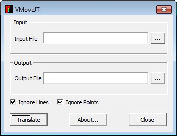

GUI Layout¶
VMoveJT GUI can be invoked from Start | Programs | VCollab | VMoveJT. The following diagram describes it’s layout.

Input File |
Allows user to select the input JT file |
Output File |
Allows user to select output CAX file |
Ignore Lines |
Helps user to ignore the line elements |
Ignore Points |
Helps user to ignore the point elements |
Translate |
Starts conversion. |
About… |
Pops up VMoveJT version information. |
Close |
Closes the window. |